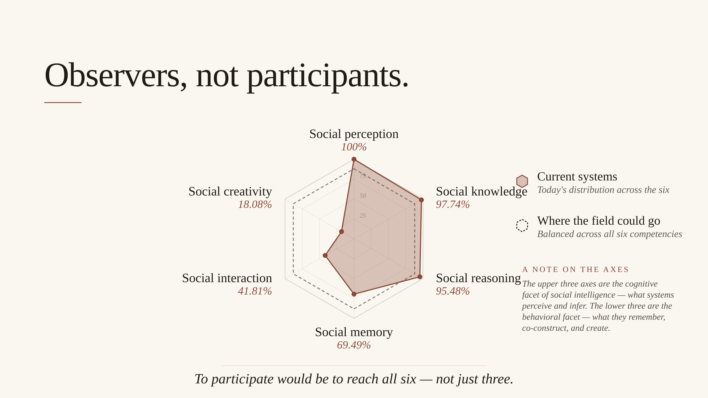

The Social Gaze of LLMs: A Systematic Review of Multimodal Approaches to Human Behavior Understanding
LLM-powered multimodal systems are increasingly used to interpret human social behavior — in classrooms, clinics, robots, and surveillance settings — yet there has been no systematic account of how researchers actually apply these models' "social competence." I led a systematic review of 176 publications across HCI, AI, healthcare, and education, developing a four-dimensional coding framework (application, technical, evaluative, ethical) and a human-in-the-loop, LLM-assisted coding pipeline.
The review surfaces four interlocking patterns: a heavy concentration on social perception and reasoning with little work on interaction or creativity; a "modality-to-text bottleneck" that compresses rich audiovisual signals into transcripts before reasoning; evaluation practices that privilege static benchmarks over socially grounded human-centered assessment; and ethical engagement that addresses privacy concretely while leaving fairness and societal harms largely unmitigated. From these patterns I argue that social creativity — the capacity to generate multiple plausible interpretations of an ambiguous social situation — is a research opportunity that current convergent design paradigms systematically underdevelop.
